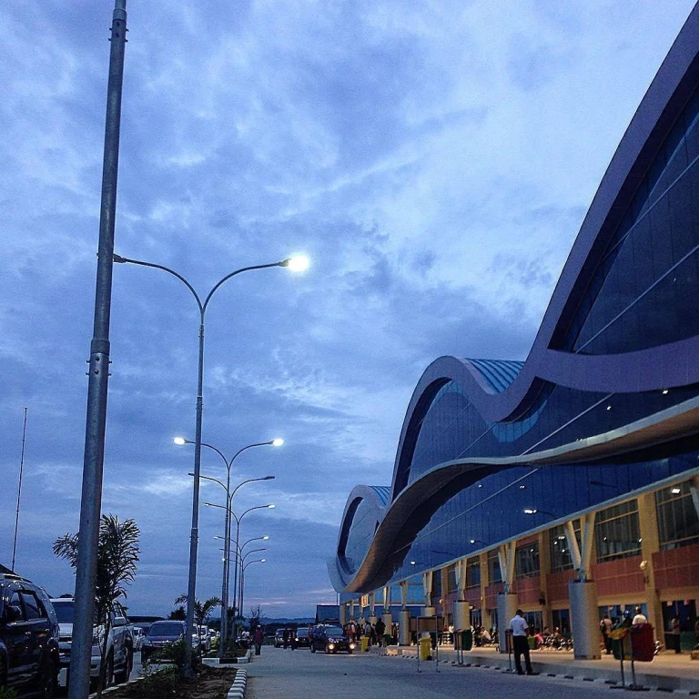

Danau ini terkenal sebagai warisan nenek moyang suku Maybrat sehingga para penduduknya sangat menjaga habitat alam di sekitar danau agar tidak rusak. Keindahan danau ini sangat jelas terlihat karena memiliki air berwarna biru yang jernih.
Pura Taman Saraswati di Ubud, Bali, merupakan pura cantik yang dikelilingi kolam teratai indah. Didedikasikan untuk Dewi Saraswati, pura ini terkenal akan arsitektur Bali yang megah. Tempat ini ideal untuk wisatawan yang ingin menikmati keindahan budaya Bali dan menyaksikan pertunjukan tari tradisional.
Kabupaten Raja Ampat juga memiliki gugusan bukit karst yang tak kalah menarik. Salah satunya adalah Bukit Pianemo. Terletak di Groot Fam, Saukabu, Kepulauan Waigeo Barat, Bukit Pianemo menawarkan keindahan yang luar biasa. Butuh waktu dua jam menggunakan kapal cepat dari Kota Sorong untuk sampai ke tempat ini.
Anda akan berangkat menuju Sorong. Jika Anda terbang dari Jakarta, perjalanan dengan pesawat akan memakan waktu sekitar 4 jam. Setibanya di Bandara Domine Eudard Osok Airport, Sorong, Anda akan dijemput dan menuju pelabuhan untuk transit ke Raja Ampat.
Perjalanan dengan kapal akan memakan waktu sekitar 2-3 jam. Setibanya di Raja Ampat, Anda akan dijemput dan menuju Waisai Beach Hotel untuk check-in. Check-in di hotel atau villa untuk menaruh barang dan beristirahat sejenak.
Setelah check-in, Anda bisa memulai liburan dengan berkunjung ke Pantai Raja Ampat. Anda bisa bersantai di tepi pantai atau mencoba olahraga air.
SIANG
Makan siang di Engineering Coffee, yang menyediakan berbagai macam makanan Indonesia.
Setelah makan siang, Anda dapat Mulai eksplorasi dengan mengunjungi Pulau Friwen untuk snorkeling dan menikmati pemandangan pantai.
SORE
Sore hari, Anda akan mengunjungi Pasir Timbul untuk menikmati pasir putih yang hanya muncul saat air surut.
MALAM
Makan malam di Warung Pondok Lesehan, yang menyediakan berbagai macam makanan Indonesia.
Setelah makan malam, Anda kembali ke Waisai Beach Hotel untuk istirahat dan bersantai.

Tiket pesawat
Booking sekarang agar tidak kehabisan tiket
Tiket kapal
Sediakan budget sekitar 200rb - 500rb untuk tiket kapal. Saat ini tiket kapal belum tersedia untuk booking online
★ 4.7
Waisai Beach Hotel Waigeo
Booking sekarang agar tidak kehabisan kamar
Day 2: Jelajah Pianeamo dan Tempat Ikonik
PAGI
Sarapan di hotel untuk memulai hari dengan energi yang cukup.
Berangkat pagi ke Pulau Pianemo. Naik ke puncak Pianemo untuk menikmati pemandangan spektakuler.
Setelah itu, Anda akan melanjutkan perjalanan ke Jetty Sawandarek dan Arborek sekitar 1-2 jam dengan kapal cepat untuk snorkeling.
Sawandarek terkenal dengan terumbu karangnya yang indah.
SIANG
Makan siang di Makan siang di Desa Arborek sambil menikmati pemandangan dan berinteraksi dengan penduduk lokal.
Setelah makan siang, Anda akan melanjutkan perjalanan ke Teluk Kabui sekitar 45 menit dengan speedboat.
SORE
Di sore hari, Anda akan mengunjungi Teluk Kabui, area dengan batu-batu karang besar dan pemandangan yang unik.
Sore hari kembali ke hotel untuk menikmati sunset dan bersantai.
MALAM
Kembali ke Waisai Beach Hotel untuk makan malam di Kedai Imajinazi. Setelah makan malam, kembali ke hotel untuk beristirahat.
Tiket kapal
Sediakan budget sekitar 1,5 jt dengan kapasitas 6-8 orang untuk tiket kapal. Saat ini tiket kapal belum tersedia untuk booking online
Tiket kapal
Sediakan budget sekitar 300rb per kapal untuk tiket kapal. Saat ini tiket kapal belum tersedia untuk booking online
Tiket Masuk
Sediakan budget sekitar 30rb untuk tiket masuk. Saat ini tiket kapal belum tersedia untuk booking online
Day 3: Wisata Santai dan Kembali
PAGI
Nikmati pagi terakhir di Waisai Beach Hotel, bisa snorkeling di pantai sekitar hotel atau sekadar berjemur.
Check-out dari hotel dan menuju pelabuhan Waisai.
SIANG
Naik kapal cepat kembali ke Sorong.
Tiba di Sorong, bersiap menuju Bandara Domine Eduard Osok untuk penerbangan pulang.
Tiket kapal
Sediakan budget sekitar 200rb - 500rb untuk tiket kapal. Saat ini tiket kapal belum tersedia untuk booking online